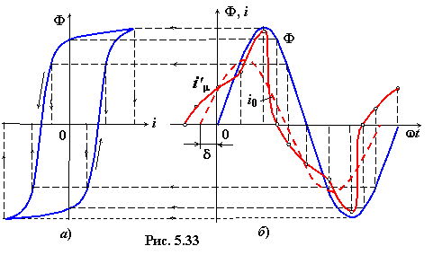

5.4.2.1. Форма намагничивающего тока катушки со сталью
при синусоидальном напряжении питания
при синусоидальном напряжении питания
В реальной катушке со сталью форма намагничивающего тока зависит от ширины петли гистерезиса и от степени насыщения ферромагнитного сердечника.
Как отмечалось, при приложенном к катушке со сталью синусоидальном напряжении формируется синусоидальный магнитный поток Ф. При узкой петле гистерезиса и небольшой магнитной индукции в магнитопроводе (скажем, менее 0,6 Тл) форма тока в катушке близка к синусоидальной. Однако при широкой петле гистерезиса Ф(i'µ) при синусоидальном магнитном потоке ток i'µ в катушке периодический, но не синусоидальный, отличие от синусоиды возрастает с увеличением степени
насыщения магнитопровода.
Эквивалентный синусоидальный намагничивающий ток. На рис. 5.33 приведён график тока i'µ(ωt) при синусоидальном магнитном потоке
Ф(ωt) в сечении магнитопровода, кривая намагничивания которого представлена в масштабе Ф(i'µ). Кривая тока i'µ(ωt) построена путём нахождения значений тока для различных значений потока Ф в соответствующие моменты времени ωtk. Соединяя найденные при построении
точки, получим кривую изменения тока во времени. Кривая тока несинусоидальная; при этом ток проходит через нуль раньше, чем магнитный поток, т. е. поток Ф отстаёт по фазе от тока i'µ.
|  |
Если разложить кривую тока в ряд Фурье, то в полученном выражении будут отсутствовать чётные гармоники (кривая тока симметрична относительно оси абсцисс), и основной вклад в кривую тока вносят первая и третья гармоники. Если амплитуды высших гармоник ряда Фурье малы и несинусоидальность тока существенно не сказывается на работе устройства, как, например, в трансформаторе, то несинусоидальный ток i'µ может быть заменён эквивалентной
синусоидой – синусоидальным током i0 (см. рис. 5.33) при равенстве их действующих значений